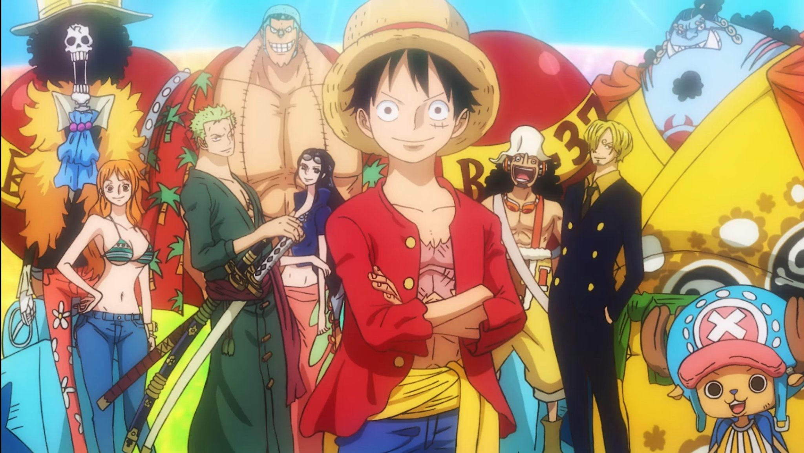
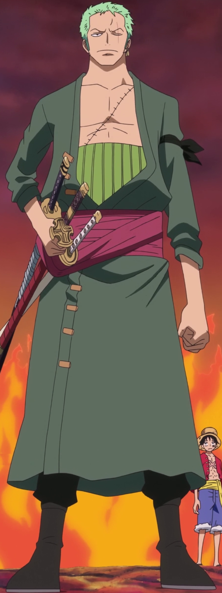
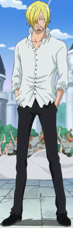
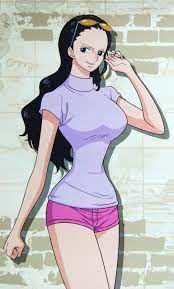
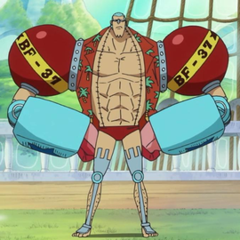
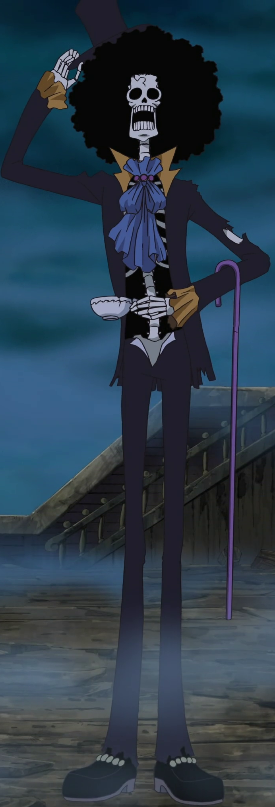
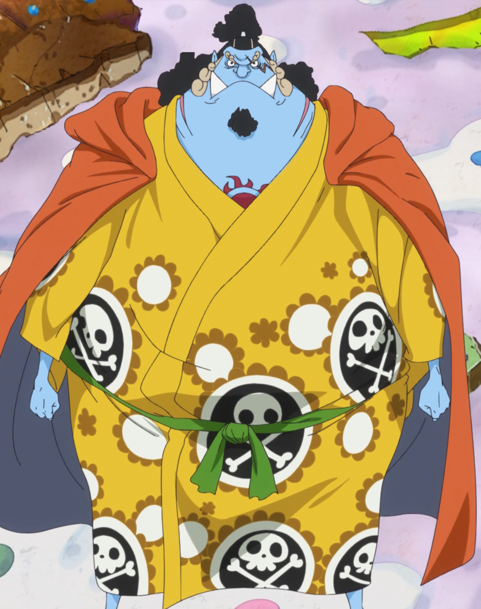

PERSONAJES
Piratas sombrero de paja
Los "mugiwara" tambien conocidos como "piratas sobrero de paja"son una tripulación de lo más variada en el mundo de One Piece. Es una banda de piratas original del East Blue, pero tiene miembros de diferentes partes del mundo. Ellos son el foco y los principales protagonistas de la trama del manga y el anime de One Piece, están capitaneados por el protagonista principal de la serie, Monkey D. Luffy.
Se les conoce como los de “Sombrero de Paja”, por el característico sombrero de su capitán, el cual le fue cedido por Shanks el Pelirrojo, y fueron conocidos como «Piratas de Sombrero de Paja» gracias a Smoker en Arabasta. La banda navegó en el Going Merry, su primer barco oficial, hasta el arco de Water 7. Durante el arco del regreso a Water 7, Franky e Iceburg les construyeron un nuevo barco, al que Iceburg llamó Thousand Sunny, a pesar de las proposiciones de nombres por parte de los miembros de la tripulación. Actualmente, los Piratas de Sombrero de Paja están constituidos por diez miembros cuyas recompensas suman un total de Belly de 3.161.000.100.
Tras los eventos acaecidos en el Archipiélago Sabaody, los nueve miembros fueron separados unos de otros. Durante dos años todos entrenaron en sus relativos destinos en los que cayeron tras la separación, llegando a ser más poderosos para ayudarse los unos a los otros. Pasado el tiempo se reunieron de nuevo y desde entonces se han convertido en un gran poder activo en el Nuevo Mundo, agregando además a la tripulación a un antiguo miembro de los Siete Guerreros del Mar, Jinbe. Incluso han logrado tomar posesión de una de las armas vivientes de Big Mom, Zeus, quien es ahora un siervo incondicional de Nami y una nueva arma para la tripulación.
Miembros de la tripulacion
Sus filas cuentan con miembros tan diferentes unos de otros que parecen escogidos al azar. Esto incluye al médico de abordo, que es un reno que cambia de forma, lo que causa que mucha gente le confunda con un gorila cuando adquiere su forma animal o un mapache cuando está en su forma híbrida; un cyborg como carpintero naval que tiene un comportamiento excéntrico y que lo único que viste es una camisa abierta y un bañador; y un vival, no-muerto y pervertido esqueleto como bardo. Si se tienen en cuenta sus pasados, sólo se suma la rareza colectiva de la tripulación: El capitán, cuya familia son gente infame y peligrosa, el espadachín, que fue un cazarrecompensas, el cocinero, que era un príncipe que escapó de su familia, que son una familia real de asesinos, la navegante, que es una ladrona experta en robar a piratas, la arqueóloga, que trabajó para una empresa criminal presidida por uno de los Siete Guerreros del Mar y el timonel de la banda, un gyojin que no sólo fue parte de los Siete Guerreros del Mar, sino que estuvo preso en la prisión más segura del mundo, lugar donde conoció a Luffy.
Los Piratas de Sombrero de Paja tienen a cuatro miembros con poderes de la fruta del diablo: Luffy, Chopper, Robin y Brook. La mayoría de ellos son muy jóvenes, sólo cuatro son mayores de treinta años, aunque dos miembros de los cuatro más mayores tienen un comportamiento infantil, al igual que los otros. Al contrario que muchas otras bandas, ellos consideran su barco un miembro más.
Caracteristicas de cada personaje (Profesiones, capacidades, sueños y recompensas)
 Monkey D Luffy:
Monkey D Luffy:
Profesion y apodo:
- Capitán
- "Mugiwara" (sobrero de paja)
Capacidades:
- Genio del combate
- Fruta Gomu Gomu
- Estilo de lucha libre
- Kenbunshoku haki
- Busoshoku haki
- Haoshoku haki
 Recompensas:
Recompensas:
- Primera recompnesa: 30.000.000 Bellys por derrotar a los piratas más peligrosos del East Blue; Buggy, Don Krieg, y Arlong.
- Segunda recompensa: 100.000.000 Bellys por derrotar al Guerrero del Mar Crocodile.
- Tercera recompensa: 300.000.000 Bellys por derrotar a Blueno y Rob Lucci del CP9, organizar el asalto a Enies Lobby, y por declarar la guerra al Gobierno Mundial.
- Cuarta recompensa: 400.000.000 Bellys por algunas o todas las siguientes razones: por derrotar a Gekko Moriah, uno de los Siete Guerreros del Mar, golpear a un Noble Mundial, por provocar una fuga masiva de unos 241 prisioneros de Impel Down, por participar en la Guerra de Marineford del lado de Barbablanca para salvar a Portgas D. Ace, por tocar la Campana Ox (cosa que se entiende como una declaración de guerra), y por ser reconocido públicamente como el hijo de Dragon "el Revolucionario".
- Quinta recompensa: 500.000.000 Bellys por derrotar a Caesar Clown y a uno de los Siete Guerreros del Mar, Donquixote Doflamingo, y formar una alianza con los Piratas de Heart.
- Sexta recompensa: 1.500.000.000 Bellys por invadir el territorio de Big Mom, derrotar a dos de sus comandantes sweet (Cracker y Katakuri), intentar asesinarla y ser públicamente reconocido como el líder de la Gran Flota de Sombrero de Paja.
Sueños:
- El sueño de Luffy es ser el Rey de los Piratas junto a una tripulación para respaldarle. Para poder llegar a ser el Rey de los Piratas, debe encontrar el tesoro de Gol D. Roger, el One Piece, que está escondido en Laugh Tale. En cuando a su tripulación, ha reunido a diez personas hasta ahora que han llamado su atención. Luffy también está buscando reunirse con Shanks de nuevo para devolverle su sombrero de paja, pero sólo lo hará cuando su tripulación sea más fuerte que la de Shanks.
Roronoa Zoro:
Profesion y apodo:
- Combatiente
- "Cazador de Piratas"
Capacidades:
- Poderoso espadachín
- Santoryu
- Kitsunebi-ryu
- Kenbunshoku haki
- Busoshoku haki
 Recompensas:
Recompensas:
- Primera recompensa: 60.000.000 Bellys por derrotar a Daz Bones y cien cazarrecompensas en Whiskey Peak.
- Segunda recompensa: 120.000.000 Bellys por participar junto al resto de la banda en el asalto a Enies Lobby y derrotar a Kaku del CP9.
- Tercera recompensa: 320.000.000 Bellys por participar en el derrocamiento de Donquixote Doflamingo, junto con el resto de la banda que estaba en Dressrosa, además de derrotar a Pica uno de los oficiales supremos de la familia Donquixote.
Sueños:
- El sueño de Zoro, que compartía con Kuina, es el de convertirse en el mejor espadachín del mundo. Para cumplir ese sueño debe superar a todos los espadachines del mundo, incluido el mejor de todos, Dracule Mihawk.[60] Zoro casi renuncia a su sueño cuando intentó convencer a Bartholomew Kuma de que se abstuviera de matar a Luffy, a pesar de que la primera vez que se encontraron Luffy y él, Zoro le amenazó con matarle si se entrometía en su camino, demostrando así la lealtad a su capitán así como el resto de la tripulación, ya que cree que no podrá ser el mejor espadachín del mundo si no puede proteger el sueño de su capitán (Luffy cree que el Rey de los Piratas debe tener a su lado al mejor espadachín del mundo).
 Nami:
Nami:
Profesion y apodo:
Capacidades:
- Luchadora con arma de asta
- Cartógrafa
- Habilidosa navegante
- Ladrona experta
- Controladora del clima
 Recompensas:
Recompensas:
- Primera Recompensa: 16.000.000 Bellys por derrotar a Kalifa del CP9. Mientras la mayoría de los Piratas de Sombrero de Paja estaban impresionados por sus recompensas, a Nami no le gustó convertirse en alguien buscado. Ella pensaba que su foto sería para una revista ya que la engañaron, es por eso que su pose es tan sugerente.
- Segunda Recompensa: Tras los eventos en Dressrosa la recompensa de Nami aumentó hasta 66.000.000 Bellys, su fotografía también fue actualizada.
Sueños:
- El sueño de Nami es dibujar un mapa del mundo entero. Ella ya ha cartografiado todas las áreas por las que se ha movido, y se puede suponer que terminará su mapa una vez acabe la historia. También, al principio de la historia, trataba de obtener 100.000.000 Bellys para comprar y salvar a su pueblo natal, villa Cocoyasi, de las garras del pirata gyojin Arlong; mientras que sus ahorros fueron confiscados tras robar 93.000.000 Bellys, durante su robo a los piratas conoció a Luffy, quien derrotó a Arlong y liberó a su pueblo.
 Usopp:
Usopp:
Profesion y apodo:
- Francotirador
- "Sogeking", "Rey de los Francotiradores", "Dios"
Capacidades:
- Artillero
- Inventor creativo
- Mentiroso compulsivo
- Artista creativo
- Arsenal versátil
- Ingenioso estratega
- Kenbunshoku haki
 Recompensas:
Recompensas:
- Primera Recompensa: 30.000.000 Bellys por quemar la bandera del Gobierno Mundial y disparar a los marines del Puente de la Indecisión
- Segunda Recompensa: 200.000.000 Bellys por ayudar en el derrocamiento de Donquixote Doflamingo, por derrotar a Sugar, oficial de los Piratas Donquixote y salvar a la gente que había esclavizada en Dressrosa.[51] Aún no ha sido especificado si su recompensa había incrementado respecto a la del póster de Sogeking o es un póster completamente nuevo. El cartel cambia completamente teniendo una nueva imagen de la cara de Usopp ensangrentada y un nuevo título, "el Dios" Usopp.
Sueños:
- El sueño de Usopp es convertirse en un valiente guerrero del mar como su padre, Yasopp. Aunque él insinúa que ya ha logrado ese sueño (antes de abandonar la banda), Usopp tiene un segundo sueño. Tras el arco de Little Garden, él quiere visitar Elbaf y ver a los gigantes guerreros que idolatra, y durante el arco de 3D2Y, Usopp quiere realizar un tercer sueño, ser el verdadero Rey de los Francotiradores, tras hacer que el mensaje de Luffy le inspirara durante los dos años de salto temporal.
Sanji:
Profesion y apodo:
Capacidades:
- Estilo de Pierna Negra
- Kenbunshoku haki
- Busoshoku haki
- Experto en alta cocina
- Artista Marcial
- Ingenioso estratega
 Recompensas:
Recompensas:
- Primera recompensa: 77.000.000 Bellys por la derrota de Jabra del CP9, y por cerrar las Puertas de la Justicia.[49] Sin embargo, debido a que Attach olvidó quitar la tapa del objetivo cuando tomaba la foto a Sanji, la foto para el cartel no fue tomada. Sin embargo, se sustituyó por un retrato robot de una persona que pobremente se parece a él. Esto, junto a otros incidentes que hubo alrededor de la foto, son parte de un chiste de como Sanji tiene la mala suerte de ser reconocido por su imagen del cartel.
- Segunda recompensa: Tras los eventos de Dressrosa la recompensa de Sanji aumentó hasta 177.000.000 Bellys y la imagen del cartel se cambió por una fotografía de su cara real. Sin embargo, junto a su imagen y recompensa también cambió la condición de captura; bajo la influencia de su familia, la condición para cobrar la recompensa cambió a "Only Alive" (sólo vivo), haciéndola única entre todas las recompensas del mundo.
- Tercera recompensa: Después de luchar contra miembros de los Piratas de Big Mom en Totto Land, de unirse al plan para asesinar a Big Mom y después de que su conexión con el Germa 66 fuese revelada públicamente, la recompensa de Sanji aumentó hasta 330.000.000 Bellys y el nombre de su cartel ha sido actualizado a "Vinsmoke Sanji", además las condiciones de captura han vuelto a ser "Dead or Alive".
Sueños:
- El sueño de Sanji, compartido con Zeff, es encontrar el All Blue, un océano legendario. Se supone que se encuentra en Grand Line, y es un lugar en cuyas aguas se reúnen todas las especies marinas del mundo. Durante el principio del arco de Arlong Park, Sanji declaró que algún día quería visitar la isla Gyojin para ver una sirena, deseo que ya ha cumplido; Efectivamente, el cocinero empezó a llorar al ver a todas las sirenas, dando a entender que ese deseo estaba al mismo nivel que encontrar el All Blue. También tenía el sueño de comer la fruta Suke Suke, pero, desafortunadamente, Absalom destruyó ese sueño ya que él la había comido ya. Sin embargo, tras ver el detestable comportamiento de Absalom, cambió de opinión en cuanto a comer dicha fruta del diablo. Al igual que Zoro, Sanji casi renuncia a su sueño de encontrar el All Blue cuando priorizó el proteger a Zeff de las amenazas de muerte de su padre y los Piratas de Big Mom.
 Tony Tony Chopper:
Tony Tony Chopper:
Profesion y apodo:
- Médico
- "Amante del Algodón de Azúcar"
Capacidades:
- Grandes habilidades médicas
- Fruta Hito Hito
- Comprensión del lenguaje animal
- Estilo de lucha libre
- Kung Fu
- Rumble ball
 Recompensas:
Recompensas:
- Primera Recompensa: 50 Bellys.
- Segunda Recompensa: Tras los acontecimientos de Dressrosa la recompensa subió a 100 Bellys y su imagen del cartel fue actualizada teniendo una expresión similar a la del antiguo cartel.
Sueños:
- El sueño de Chopper es convertirse en un gran médico capaz de curar cualquier enfermedad, al igual que la ambición de su figura paterna, Hiriluk, así como viajar por el mundo para ampliar sus horizontes.
Nico Robin:
Profesion y apodo:
- Arqueóloga
- "Niña Demonio"
Capacidades:
- Asesinato
- Experta en operaciones clandestinas
- Estilo de lucha libre
- Fruta Hana Hana
- Historiadora
- Lectora de los poneglyphs
 Recompensas:
Recompensas:
- Primera recompensa: 79.000.000 Bellys por destruir seis barcos de guerra de la Buster Call (en realidad, era por su habilidad de leer Poneglyphs.
- Segunda recompensa: 80.000.000 Bellys por participar en el Incidente de Enies Lobby junto al resto de la banda (su cartel tuvo una nueva fotografía).
- Tercera recompensa: 130.000.000 Bellys por participar en el derrocamiento de Donquixote Doflamingo en Dressrosa y derrotar a Hakuba.
Sueños:
- El sueño de Robin es encontrar el Río poneglyph que cuenta la verdadera historia del mundo de One Piece, incluido el Siglo Vacío, continuando así la investigación de su madre, Nico Olvia, y su mentor Clover. Robin tuvo la oportunidad de saber qué ocurrió durante el Siglo Vacío cuando habló con Silvers Rayleigh, pero decidió continuar su viaje. Recientemente, supo que los road poneglyphs señalan la ubicación de Laugh Tale y, por ende, la del Río poneglyph.
Franky:
Profesion y apodo:
- Carpintero Naval
- "El Cyborg", "Hombre de Hierro"
Capacidades:
- Boxeo
- Modificaciones cibernéticas
- Ingeniero
- Maestro carpintero
- Arsenal versátil
 Recompensas:
Recompensas:
- Primera recompensa:44.000.000 Bellys por la quema de los planos del Plutón y la derrota de Fukuro del CP9.
- Segunda recompensa: 94.000.000 Bellys Por participar en el derrocamiento de Donquixote Doflamingo además de derrotar a Senor Pink.
Sueños:
- El sueño de Franky es construir y viajar en un barco de ensueño que sea capaz de superar innumerables batallas, dificultades extremas y llegar el final de Grand Line. Él fue el constructor que abordan actualmente los Piratas de Sombrero de Paja y su tarea es mantenerlo en buenas condiciones. Al principio, uno de sus sueños era hacer pedazos a Spandam, y, afortunadamente, este sueño se hizo realidad al final del arco de Enies Lobby.
Brook:
Profesion y apodo:
- Músico
- "El Canturreador", "Soul King"
Capacidades:
- Veloz espadachín
- Esgrima
- Fruta Yomi Yomi
- Músico de primera
- Hipnosis
 Recompensas:
Recompensas:
- Primera recompensa: 33.000.000 Bellys por piratería.
- Segunda recompensa: Después de más de cincuenta años su recompensa se vio incrementada a 83.000.000 Bellys tras los acontecimientos de Dressrosa. Sin embargo, a diferencia de los carteles normales, el de Brook es un cartel de su gira antes de reunirse con el resto de los Piratas de Sombrero de Paja pero modificado con su recompensa.
Sueños:
- El sueño de Brook es volver a ver a Laboon, a quien su anterior tripulación, los Piratas Rumbar, dejaron en Reverse Mountain por su seguridad, con la promesa de volver a verle tras cruzar Grand Line. Quiere cumplir esa promesa a Laboon, así como la de todos sus fallecidos compañeros de tripulación que murieron durante el viaje, para entregarle su última canción grabada en un dial de sonido antes de morir.
Jinbe:
Profesion y apodo:
- Timonel
- "El Caballero del Mar"
Capacidades:
- Comunicación con la vida marina.
- Karate Gyojin
- Jujutsu Gyojin
- Fuerza de gyojin
- Kenbunshoku haki
- Busoshoku haki
- Genio estratega
- Grandes dotes de timonel
 Recompensas:
Recompensas:
- Primera recompensa: Jinbe tuvo una recompensa de 76.000.000 Bellys durante su etapa como miembro de los Piratas del Sol bajo el mando de Fisher Tiger.
- Segunda recompensa: Tras la muerte de Tiger, Jinbe se alzó como el nuevo capitán de los Piratas del Sol. Este título le valió una subida de su recompensa a 250.000.000 Bellys Esta recompensa se congeló debido a su unión a los Los Siete Guerreros del Mar.
- Tercera recompensa: Durante el salto temporal, tras la Batalla de Marineford y tras abandonar su título como uno de los Siete Guerreros del Mar, su recompensa aumentó a 438.000.000 Bellys.
Sueños:
- El sueño de Jinbe, así como el de su antiguo capitán, Fisher Tiger, es la convivencia de los humanos con los habitantes del fondo del mar. Al principio renunció a ser parte de la Guardia Real de Neptune para unirse a Fisher Tiger en la búsqueda de la igualdad, años más tarde se unió al Gobierno Mundial al formar parte de los Siete Guerreros del Mar y se alió con dos de los Cuatro Emperadores (Edward Newgate y Charlotte Linlin) para proteger a los habitantes de la isla Gyojin. Sin embargo, tal y como revelaron los Piratas del Sol, sus acciones siempre han ido en beneficio de los demás y le alentaron a seguir su deseo de ayudar a Luffy a convertirse en el Rey de los Piratas.
volver al inicio